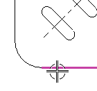
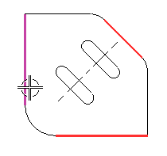

打开图纸页 Sheet 3 并标注到投影的交点
图纸上只有一个俯视图，并且只有一个中心线符号被添加到视图中。

-
在制图尺寸下拉菜单中，选择垂直尺寸 。
这个尺寸将测量左下角交点与右侧斜线中点之间的距离。
由于没有左下角没有特别的控制点供选择，您可以选择投影交点。

-
在制图尺寸组中，确保精度是设置为2位。
-
选择斜边。

下一步是要定义交点，因为这两条边并没有真正相交，您需要使用其它交点按钮。
-
在选择条上，打开两曲线相交 。
两曲线相交让您标注到两个投影的交点，可以使用这个这个选项来选择任意两条边，尽管它们的端点无法同时出现在选择球内。当选择了两曲线相交后，所有其它捕捉点选项变为不可用。
-
选择下图所示的边。

-
选择另一条相交的边。

-
单击以放置尺寸。